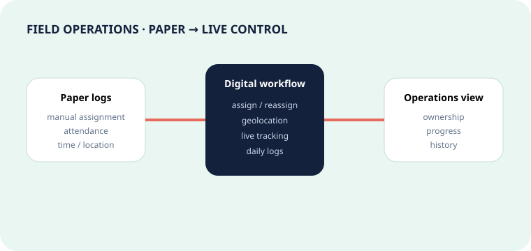

02 · SaaS · Singapore · Field operations
Wilson Parking: from paper logs to live operations.
Digitizing task ownership, attendance, geolocation, time-on-task and daily activity across parking locations.

Problem
Paper captured activity. It did not create operational visibility.
Administrators needed to understand who owned a task, where work was happening, when it started, how long it took and what had been completed.
Requirements I shaped
- Task assignment and runtime reassignment.
- Geolocation and live tracking.
- Attendance and time-on-task.
- Daily operational logs and history.
- Web and mobile workflow behavior.
Transformation
One searchable trail from assignment to completion.
Discover
Mapped the AS-IS field journey and pain points.
Design
Specified workflow states, actors, reassignment and location behavior.
Validate
Aligned acceptance scenarios with real operational outcomes and edge cases.